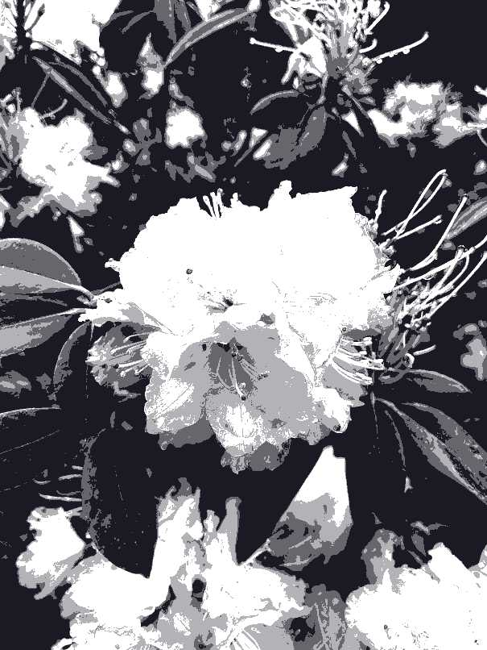
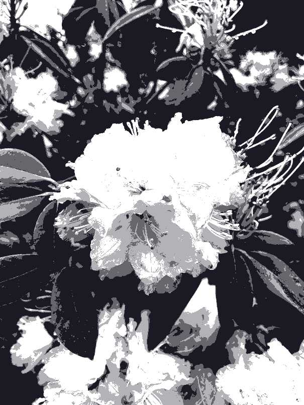

Image Compression

 


Image 1: Uncompressed high-resolution PNG (12.9 MB)
Image 2: Reducing resolution by 500% (760 KB)
Image 3: Compressed to JPG format (63 KB)
Image 4: Gradient mapped (67 KB)
Image 5: Palettised to 4-colours (73 KB)
Image 6: Ordered (Bayer) dithering applied (125 KB)
Various compression methods may be used to turn a full-size image into something more suitable for the Internet, especially when practising low-carbon web design.
Reducing the resolution of an image can greatly reduce file size, as images are not often displayed at their native resolution and are typically a small component of the websites and thus don't need the extra pixels.
Using a file format with lossy compression, such as the JPEG format, can remove unnecessary data from the image while keeping the image visually similar.
Other measures, like reducing the colours in an image via a gradient map, and/or palettising the image to a small selection of colours may have varying effects on the image, possibly reducing the file size.
Dithering is a useful tool for palettised images that, for the cost of a larger file, may improve the visual quality of the image by creating the illusion of extra colour via checkerboard patterns.